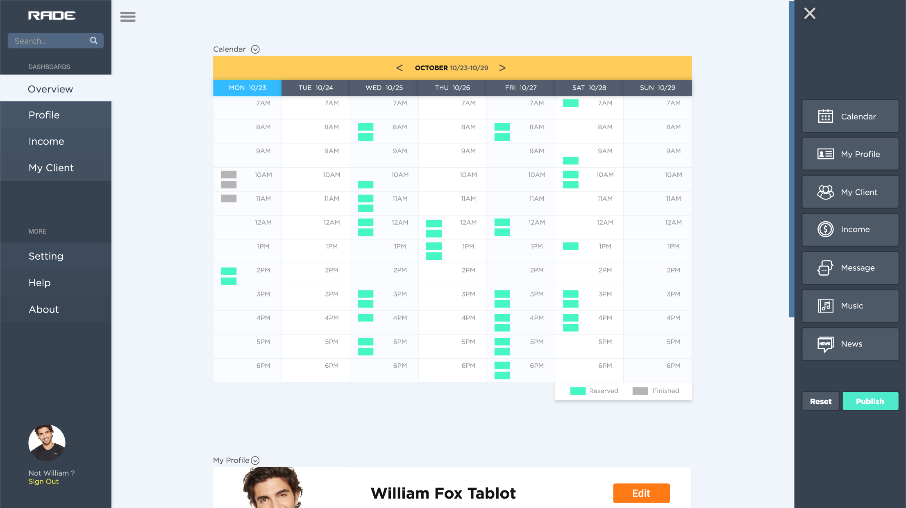

“RADE” is a product to help trainers get and maintain clients, and allow clients to schedule training sessions with a drag-and-drop website and service builder for personal trainers. Allows for customization of content (types of training oered) hours and a booking calendar feature to help organize clients and give clients a schedule and offer goal-tracking.
Web-based (only desktop version), site builder
Responsive website (mobile) for client
Primary Audience - Personal trainers who are not tech savvy, but need to have a digital presence.
Secondary Audience - Current and potential clients looking for information about a personal trainer and schedule a session.
A trainer would like to build a home page by dragging training modules about their specializations (weight loss, group fitness, pilates, strength conditioning, MMA training and sports training) to a desktop web page builder.
This is the Homepage of RADE desktop website, the user can Sign In and Sign Up in this page. The main features of the website are all hidden behind the Sign In buttons.
This is the Main Interface of RADE website. When the user first-time login this page, there will be a small tutorial teaches the user how to use the site builder to drag the icon to the page to build their training interface.
After user drags the calendar to the page, there will be an empty calendar appears. The Blue “MON 10/23” means today is Monday 10/23, and the square with the dotted line “1PM” means the current time.
The image above shows what the calendar looks like. Because the Personal Training has the 25-minute session and 50-minute session. Each little green square represents a 25-minute session. The little grey squares mean the completed sessions.
The trainer has an “My Profile” module to edit their information that will show to the clients.
This is what “My Profile” module looks like, it allows the trainer to edit their information shows to clients.
When the Edit button was clicked, the text in my profile area will turn to an input box, and trainers can add more information when they click the “+” button. When trainer finish editing, they can click the “publish” button to update the profile.
All set! trainer can click the “publish” button on the right to publish this website and all change has been saved.Also, there are many features in the Site Builder, the trainer can use the Music module to access Spotify, Google Music & Amazon Music. And the News will be the top recent news from Google.
A trainer would like to manage their Weekly schedule and add a client session for Thursday at 2pm.
After trainer published the website, the site builder will disappear. If the trainer needs it again. They can click the “Site Builder” button at the top right to access the site builder.
Trainers can type in the search bar on the top left to search their client. On the example above, when trainers search “Peter”. The Results show three clients who named Peter.
Then, the user can drag the client from search results to add a client session by himself. And it is simple, just drag the profile image to the calendar and the client will turn to a little green square and fit the calendar. If the user wants to cancel this action ongoing. He can drag the client away from the calendar and release. There will be nothing changed.
When the little square fit on the calendar. The reservation was completed. And there will be a small animation with a check mark to indicate the reservation was successful.
A client would like to view a personal trainer’s online profile, schedule a pilates training session for Friday, October 20, 2017 at 8am, and pay with ApplePay or Credit Card on their mobile device.
The User Login Screen and the Main Screen. The client uses the app to reserve their training sessions. Also, the user can buy Monthly-Pass to enjoy unlimited training for a month.
This is the personal training information screen. The clients can check their upcoming training session and reserve new training sessions here. The clients can reserve their new sessions by time or trainer.
After the client chose their trainer, they will see what time is available for that trainer. And there are 25 minutes sessions and 50 minutes sessions, the client can choose between them based on their situation.
This is the reserve confirmation screen after the client chose their trainer and time schedule. The client will see the rate based on the training time. Trainers at the same gym will have the same rate. The client can choose their training preference and pay with credit card or Apple Pay.
A client would like to make a change to their training session by cancelling a scheduled training session for Friday at 8am and creating a new session for the following Saturday at 10am
In the personal training information screen, the client can see or edit their upcoming schedule. If they don’t like the schedule they selected before, they can reschedule this session on the reservation detail page.
This is the screen to select new training time after clicking the reschedule button. The client can use the top and bottom button to scroll the weeks.
After the client chose the new time, a confirmation window will pop up. If the training time (i.e. 25min, 50min) is not changed, the client doesn’t need to pay extra for the reschedule. This is the whole process of rescheduling a session.
Download Case Study